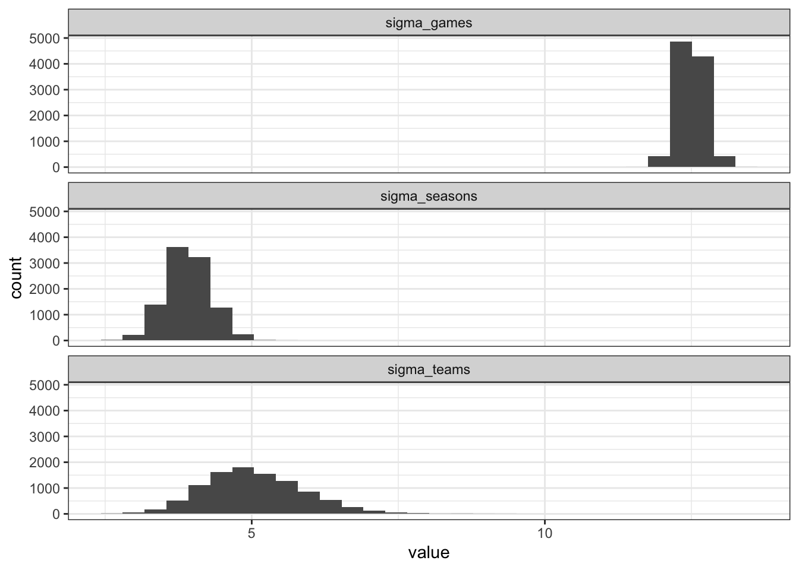
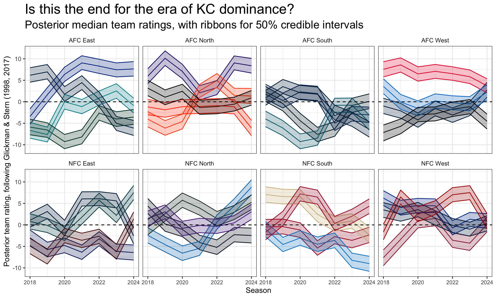
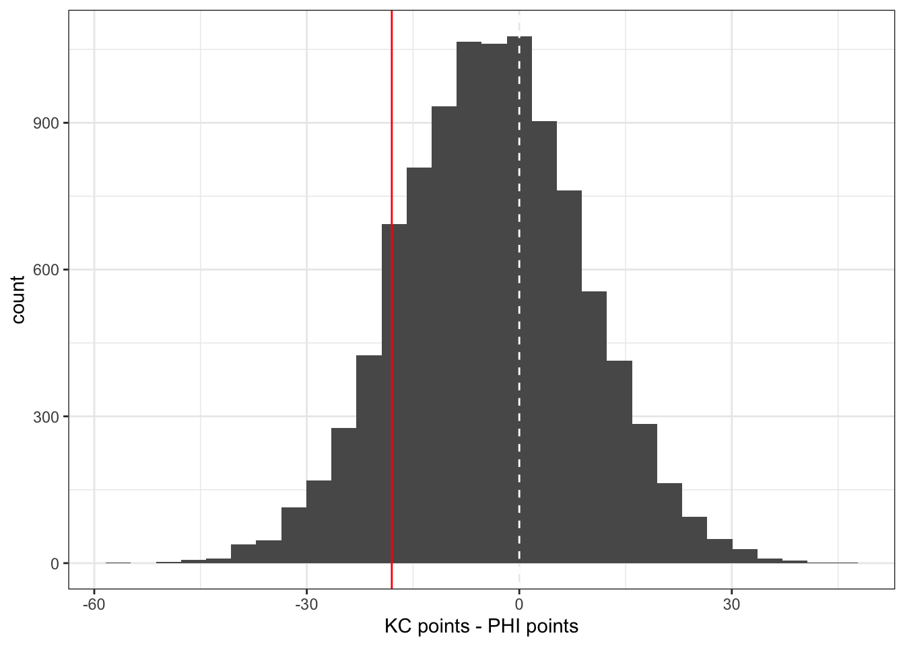

Lecture 21: Bayesian state-space model for NFL team ratings
Introduction
The purpose of this demo is to demonstrate how to fit a simple Bayesian state-space model, following the structure of the famous Glickman and Stern model (1998, 2017). We’ll demonstrate this using a dataset of NFL game outcomes during the Patrick Mahomes era (2018 to present, marking the years since Mahomes became the starting QB for Kansas City). You can find this dataset under demos/week12 as nfl_mahomes_era_games.csv, with the script to generate the dataset get_mahomes_era_nfl_games.csv. The following code chunk reads in the dataset, makes sure that Raiders are labeled as LV, and displays the columns:
library(tidyverse)nfl_games <-read_csv(here::here("data/nfl_mahomes_era_games.csv")) |># Combine OAK into LV:mutate(home_team =ifelse(home_team =="OAK", "LV", home_team),away_team =ifelse(away_team =="OAK", "LV", away_team))nfl_games
We’re now going to proceed to set-up the Bayesian state-space model. First, we’ll initialize our dataset in the manner appropriate for handling in Stan. This dataset will look similar to the RAPM data, except the indicators are constructed at the team level:
# First just get the context: season, week, game_id, and score_diff:games_context <- nfl_games |> dplyr::select(season, week, game_id, score_diff) |># Make a season index that will be used in Stan:mutate(season_index = season -min(season) +1)# Next set-up indicators for home teams:home_teams <- nfl_games |> dplyr::select(game_id, home_team) |>mutate(is_home =1) |>pivot_wider(id_cols =c("game_id"),names_from = home_team,values_from = is_home,values_fill =0)# And now indicators for away teams:away_teams <- nfl_games |> dplyr::select(game_id, away_team) |>mutate(is_away =-1) |>pivot_wider(id_cols =c("game_id"),names_from = away_team,values_from = is_away,values_fill =0)# Stack the home and away together, take the sum so that we get one row for # each game, where home teams are 1 and away teams are -1:games_data <- home_teams |>bind_rows(away_teams) |>group_by(game_id) |>summarize(across(everything(), ~sum(.x, na.rm =TRUE)),.groups ="drop")# Join this back to the context :games_data <- games_context |>inner_join(games_data, by =c("game_id"))games_data
Now with the data constructed, we can use Stan to simulate from the posterior distribution for the considered model parameters.
The following chunk below displays the Stan code that is also available in bayes_state_space_nfl.stan. You’ll notice that this code relies on for loops to simplify the process at referring to which season for the team rating. The details about this code will be discussed in lecture.
stan_state_space_model <-"data{ // Set-up the context in terms of dataset size int<lower = 1> N_games; int<lower = 1> N_teams; // Need at least 2 seasons of data here int<lower = 2> N_seasons; // Response vector vector[N_games] y; // Design matrix matrix[N_games, N_teams] X_teams; // Season vector: int<lower = 1, upper = N_seasons> season[N_games];}// The parameters accepted by the modelparameters { // Matrix of team coefficients matrix[N_seasons, N_teams] thetas; // Game-level variance real<lower = 0> sigma_games; // Team-level variance to start real<lower = 0> sigma_teams; // Season-level innovation variance real<lower = 0> sigma_seasons; // Autoregressive parameter real<lower = 0, upper = 1> gamma;}// The state-space modelmodel { // Game level data for (i in 1:N_games) { y[i] ~ normal(dot_product(X_teams[i], thetas[season[i]]), sigma_games); } // Team ratings - starting with initial season: for (j in 1:N_teams) { thetas[1, j] ~ normal(0, sigma_teams); // Autoregressive model: for (s in 2:N_seasons) { thetas[s, j] ~ normal(gamma * thetas[s - 1, j], sigma_seasons); } } // Priors: sigma_games ~ normal(0, 5); sigma_teams ~ normal(0, 5); sigma_seasons ~ normal(0, 5); gamma ~ uniform(0, 1);}"
The following code chunk sets up the data list and then uses rstan to start sampling. NOTE: this code takes about 30 seconds to run on my computer, fairly quick given the relatively small dataset!
# Get the team indicators as a matrix:team_matrix <- games_data |> dplyr::select(-c(season, week, game_id, score_diff, season_index)) |>as.matrix()# Set-up the data list for the model:bayes_state_space_data <-list(N_games =nrow(games_data),N_teams =ncol(team_matrix),N_seasons =max(games_data$season_index),y = games_data$score_diff,X_teams = team_matrix,season = games_data$season_index)
# Assuming the file is in the right directory, start sampling from the posteriorlibrary(rstan)bayes_state_space_fit <-stan(file ="demos/week12/bayes_state_space_nfl.stan", data = bayes_state_space_data, chains =4, iter =2500*2, cores =4,seed =2025)
The following code chunk reads in the saved .rds object from the Stan model fit (that was created in the fit_bayes_state_space_nfl.R script on Canvas):
Similar to before, we should check MCMC diagnostics for our posterior samples. But for now I’ll skip that and leave that as an exercise for you to complete.
Posterior Analysis
We’re now ready to examine the posterior distributions for the parameters. First, we’ll create a simple, tidy table that has one column for each parameter (excluding Stan’s reported log posterior density). The following code chunk sets up this table with 10,000 rows (one for each sample) and 196 columns:
raw_posterior_samples <-as.data.frame(bayes_state_space_fit, pars ="lp__", include =FALSE) |>as_tibble()raw_posterior_samples
You can see that the dataset of posterior samples is quite different looking from the RAPM example. There are columns named thetas[row_index,col_index], these are referring to the matrix of team ratings thetas that have one row for each season and one column for each team. So thetas[1,1] would provide us with the posterior distribution for the first team in the first year of the dataset, which is 2018.
For each ease, we’ll first separate the variance columns from the team ratings. The code below grabs the variance and autocorrelation posterior distributions:
We can first see what the posterior distribution is for the autoregressive parameter \(\gamma\), with heavy concentration between values of 0.5 to 0.8:
`stat_bin()` using `bins = 30`. Pick better value with `binwidth`.

With regards to the model, what is the implication of the differences between these posterior distributions for the different variance terms?
Now for the ugly part, making a tidy dataset with one posterior sample row for each eam in each season. We’ll join over team abbreviations based on the colnames of the original design matrix. The code chunk below demonstrates one way to do this process via pivot_longer() and the use of separate_wider_delim() to split the thetas name based on the season and team indices:
team_ids <-tibble(team_id =as.character(1:ncol(team_matrix)),team_abbr =colnames(team_matrix))team_posterior_samples <- raw_posterior_samples |># First PIVOT!!! the posterior samples for only the thetas dplyr::select(contains("thetas")) |>pivot_longer(cols =everything(),names_to ="parameter_index",values_to ="value") |># Just grab the season and team index only mutate(season_team_index =str_remove_all(parameter_index, "(thetas\\[)|(\\])")) |># Use this convenient function to split column into two columns:separate_wider_delim(season_team_index, delim =",",names =c("season", "team_id")) |># Convert the season back:mutate(season =as.numeric(season) -1+min(games_data$season)) |># finally join the team abbreviationsleft_join(team_ids, by ="team_id") |> dplyr::select(-c(parameter_index, team_id))team_posterior_samples
# A tibble: 2,240,000 × 3
value season team_abbr
<dbl> <dbl> <chr>
1 3.69 2018 PHI
2 -1.32 2019 PHI
3 -4.31 2020 PHI
4 2.05 2021 PHI
5 5.58 2022 PHI
6 0.0247 2023 PHI
7 11.5 2024 PHI
8 8.82 2018 BAL
9 6.13 2019 BAL
10 4.45 2020 BAL
# ℹ 2,239,990 more rows
With this table on hand, we can do a variety of different tasks - such as creating our usual type of posterior distribution summaries:
The code chunk below demonstrates how you could make a graphic that includes the 50% credible intervals for each team’s season rating, broken up by division with the appropriate team color displayed (note for other sports you could use the teamcolors package):
library(nflreadr)nfl_team_colors <-load_teams() |> dplyr::select(team_abbr, team_division, team_color)# Join the colors:team_summary <- team_summary |>inner_join(nfl_team_colors, by ="team_abbr")# Get the vector of colors:team_color_vector <- team_summary |> dplyr::select(team_abbr, team_color) |>distinct() |>arrange(team_abbr) |>pull(team_color)# Create ribbon plots with all in gray to start:team_summary |>ggplot(aes(x = season)) +geom_hline(yintercept =0, linetype ="dashed", color ="black") +geom_line(aes(y = posterior_median, group = team_abbr,color = team_abbr)) +geom_ribbon(aes(ymin = lower_50, ymax = upper_50, group = team_abbr,color = team_abbr, fill = team_abbr), alpha =0.25) +facet_wrap(~ team_division, ncol =4) +geom_hline(yintercept =0, linetype ="dashed", color ="black") +scale_color_manual(values = team_color_vector, guide ="none") +scale_fill_manual(values = team_color_vector, guide ="none") +labs(x ="Season",y ="Posterior team rating, following Glickman & Stern (1998, 2017)",title ="Is this the end for the era of KC dominance?",subtitle ="Posterior median team ratings, with ribbons for 50% credible intervals") +theme_bw() +theme(strip.background =element_blank(),axis.text.x =element_text(size =8),plot.title =element_text(size =20),plot.subtitle =element_text(size =16))

As an exercise for yourself, pick two teams and generate a distribution of potential score differentials based on their posterior distribution following the 2024 season. Remember, you’ll also want to sample the game-level variance sigma_games when generating the predicted value using the rnorm function. For example, the following code displays a distribution for the posterior predicted score differential between KC and PHI (with respect to KC):
set.seed(2024)# Create a table that has the posterior samples we want to use for prediction:example_predictions <-tibble(kc_rating =pull(filter(team_posterior_samples, team_abbr =="KC", season ==2024), value),phi_rating =pull(filter(team_posterior_samples, team_abbr =="PHI", season ==2024), value),game_sd = variance_posterior_samples$sigma_games) |># Generate the predictions:mutate(score_diff =rnorm(n(), mean = kc_rating - phi_rating, sd = game_sd))# Display the distribution:example_predictions |>ggplot(aes(x = score_diff)) +geom_histogram() +geom_vline(xintercept =0, color ="white", linetype ="dashed") +# With the actual score diff:geom_vline(xintercept =-18, color ="red") +labs(x ="KC points - PHI points") +theme_bw()
`stat_bin()` using `bins = 30`. Pick better value with `binwidth`.

With a distribution like this available, you can also estimate probabilities of each team winning as well - but I’ll leave that as an exercise for you to complete…